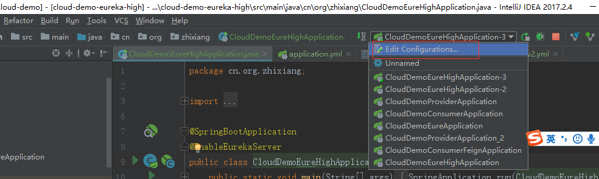
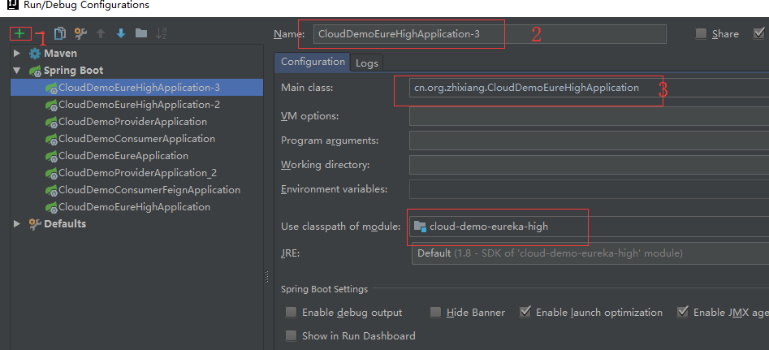
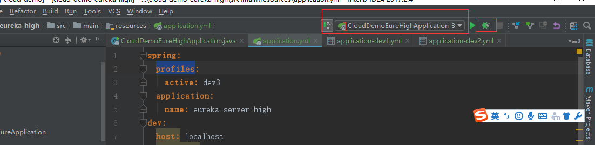
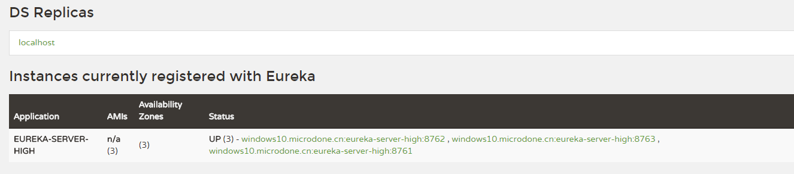

前几篇文章我们讲了一下Eureka的基础使用，但是呢有一个很重要的问题，我们讲的都是单机版的情况，如果这个时候Eureka服务挂了的话，那么我们的服务提供者跟服务消费者岂不是都废了？服务提供者和消费者都废了的话那这个程序还有存在的意义么？
那么今天咱们就讲一讲如何解决这个问题。相信大家都知道，这个问题是我们提供高可用服务必须经历的问题。解决方案就是加集群，那么我们来看一下Eureka怎么实现集群吧。
1.首先呢，我们把原先的cloud-demo-eureka项目负责一份命名为cloud-demo-eureka-hign(高可用的服务，哈哈)
注意没有看过前几篇文章的童鞋可以在文章底部找到GitHub地址先看一下代码。
为了省事起见，我们先把security的依赖去掉。
1 | xml version="1.0" encoding="UTF-8" |
2.启动类只需要改一下名字其他的不变
1 | @SpringBootApplication |
3.我们现在要玩点不一样的了，此次项目我们使用了4个配置文件。它们分别是application.yml、application-dev1.yml、application-dev2.yml、application-dev3.yml。这里解释一下为什么会使用4个配置文件，如果我们在生产环境上这里其实应该是有三个程序的，但是我们为了测试方便，就使用这一个程序当成三个使用。
先看我们的application.yml文件变成什么样子了。
1 | spring: |
我们可以看到位于最上方的就是一个spring.profiles.active属性，这个属性呢，通常适用于我们不同环境下配置的切换。举个例子，我们可能有开发、测试、生产等等不同的环境，这几个环境使用的肯定不是一个数据库，如果我们每次在各个环境都要修改一下配置文件那样岂不是累死了。而spring.profiles.active属性呢，就是指定的我们的项目启动加载的配置文件，例如我们配的值为dev1，那么一会当我们启动项目的时候就会去加载application-dev1.yml文件.
紧接着就是spring.application.name了，相信大家都知道了，我们此次的应用名称就是eureka-server-high了。
下面呢其实是我自定义的一个配置，因为此次我们要使用三个Eureka服务来组成一个集群，所以我先在这里指定一下这三个服务的端口号，至于为什么在这指定相信看了下面三个配置文件你就明白了。
4.先来看一下application-dev1.yml
1 | server: |
可以看到首先定义了端口号是上方我们在application.yml文件中定义的一个端口号8761，然后它注册的地址变成两个了，就是端口端口号为8762和8763的程序。
接着看application-dev2.yml
1 | server: |
它注册了8761和8763的程序
那么现在我想你应该已经猜出来了application-dev3.yml是怎么写的了吧
1 | server: |
5.配置文件搞定以后我们可以启动了。
首先我们到CloudDemoEureHighApplication类中右键run启动程序，这里你会发现两个疑点：
项目启动报错哎。哈哈，其实不用怕，报错其实是正常的，不报错才奇怪呢。你想到报错的原因了么？我们启动使用的配置文件是dev1，他启动会向端口号为8762和端口号为8763的项目注册，这两个项目都没有，所以肯定会报错。不过没关系，Eureka其实是启动成功了的，现在你打开浏览器访问以下localhost:8671其实是可以看到Eureka已经注册成功了。
还有一个疑点就是：哎，小编你上边不是说我们用一个程序模拟三个么，可是我这个启动了以后，再启动不是重启了么。我咋启动三个呀。
其实这个呢因为小编有妙招，现在我们8761已经启动了对吧，接下来跟我一步一步走

先点击这个 Edit Configuration，然后看下图

按照图片的标号，先点击加号图标，然后起个与CloudDemoEurekaHighApplication不一样的名字，这里我是加了一个-3，然后在第三个位置就是我们启动类的路径，最后一个位置就是选中要启动的模块。现在一个新的启动方式就做好了，接着我们把application.yml文件中的spring.
profiles.active改成dev3。

接着按上图顺序选中刚刚定义的启动方式，点击debugger启动。现在是不是发现dev3的程序也启动了。虽然还是保错，我想你应该知道原因了。
接着如法炮制，我们启动dev2，记住不要忘了修改application.yml。
现在三个服务都起来了，我们的集群是不是成功了呢
浏览器访问localhost:8761或者8762或者8763你是不是都看到了下图这样三个节点呢

如果你看到的是这样的一个效果，那么就恭喜你Eureka集群已经搭建成功了。
6.使用：
既然集群搭建成功了，那么就可以使用了，还记得我们如何把客户端注册的服务器上么，不记得话请抓紧时间复习一下：每天学点SpringCloud（二）：服务注册与发现Eureka
当时我们注册的时候，因为没有集群所以应该是这样写的
1 | eureka: |
你要是问我现在还这样写能行么，我告诉你可以，这样没问题，但是我不推荐。为什么呢，虽然我们现在使用的是集群，当我们的服务提供者注册上以后应该是三个节点都会有这个服务提供者，就算8761这个节点挂了也无所谓。但是，如果我们服务提供者在注册的时候8761就已经挂了，那么它是注册不上的，人家8762和8763现在是不认识它的。所以我推荐给你的写法就是：
1 | defaultZone: http://localhost:8761/eureka,http://localhost:8762/eureka,http://localhost:8763/eureka |
GitHub：https://github.com/2388386839/spring-cloud-demo
码云：https://gitee.com/zhixiang_blog/spring-cloud-demo
如果对您有所帮助，请记得帮忙点一个star哦